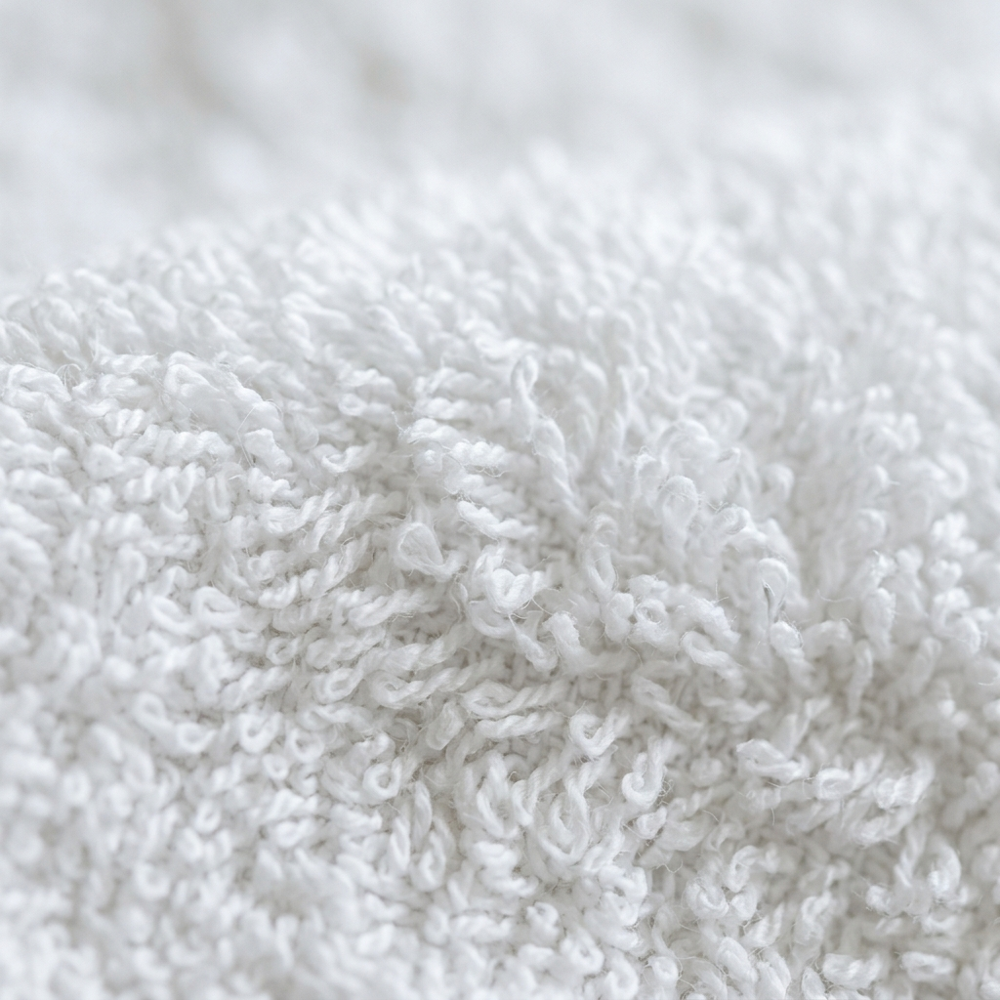
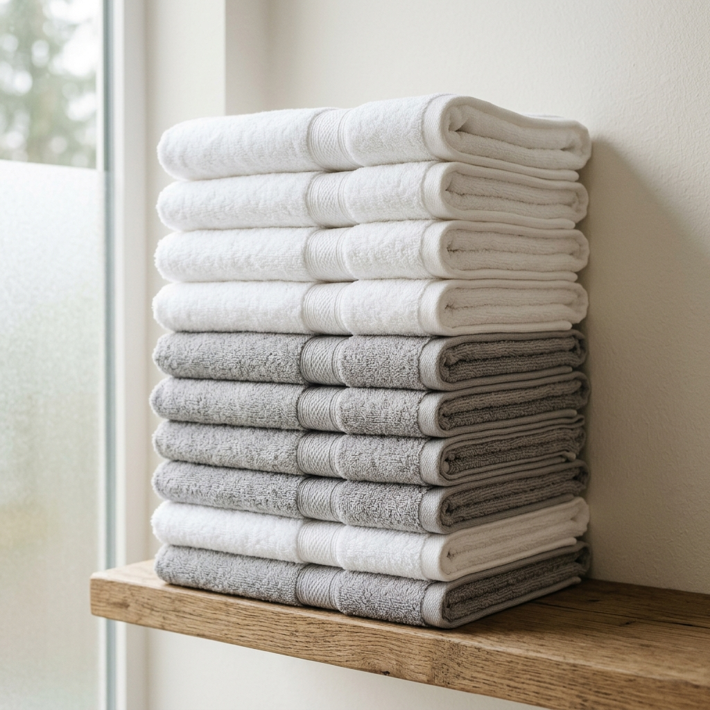
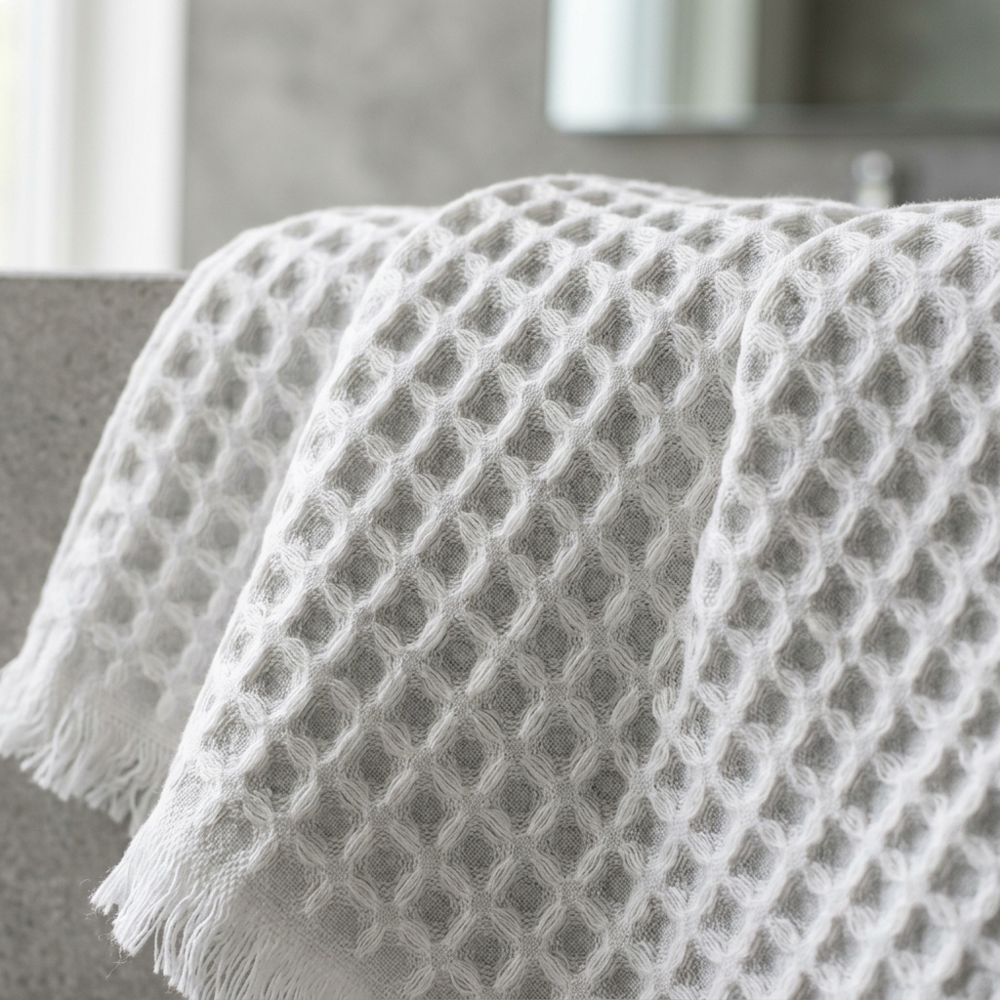

Precisão fabril e desenvolvimento modular para o universo do têxtil-lar.
Da arquitetura da fibra ao acabamento final. Desenvolvemos coleções de marca própria e atuamos com flexibilidade rigorosa em qualquer fase da cadeia produtiva têxtil.
Engenharia de artigo adaptada ao seu canal de distribuição.

550 g/m²Turco Algodão Penteado
Laçada ultra-homogénea com toque aveludado e absorção rápida. Artigo de alta rotação para marcas de luxo e retalho.

700 g/m²Linha Heavy Contract
Fio duplo retorcido 24/2 com laçada anti-puxão. Calibrada para lavagens industriais a 90ºC em hotelaria 5 estrelas.

420 g/m²Ninho de Abelha & Linho
Estrutura alveolar tridimensional que seca duas vezes mais depressa e reduz o volume de transporte e lavagem.
Zero-Twist Spa Premium
Fibras sem torção que criam bolsas de ar no interior do fio. Volumetria surpreendente com leveza e secagem ultrarrápida.
Simulador de Gramagem (GSM) & Densidade de Fio
Arraste o cursor de calibração para explorar o comportamento físico, o tempo de secagem e a aplicação recomendada da fibra para cada densidade têxtil.
Porque os maiores distribuidores e cadeias escolhem a nossa manufatura.
Eliminamos os riscos habituais do sourcing internacional: garantimos controlo laboratorial, tempos curtos de transporte na Europa e certificações de conformidade plena.
Rastreabilidade Total
Origem transparente de cada lote de algodão virgem ou reciclado com certificações GOTS e OEKO-TEX Classe I (aptas para uso pediátrico).
Laboratório Próprio
Testes internos de solidez da cor à lavagem, resistência à tração e espectrofotometria digital para garantir consistência perfeita entre partidas.
MOQ Flexível
Capacidade para produzir desde coleções cápsula exclusivas a encomendas industriais massivas de contentores completos sem quebra de rigor.
Logística Europeia
A 45 minutos do Aeroporto Sá Carneiro e Porto de Leixões. Expedição rodoviária rápida com entregas em 48-72h para a Europa Central.
Como funciona a cooperação com a DSC
Um processo claro, transparente e rápido, pensado para compradores técnicos e gestores de produto.
Briefing & Amostragem
Definição de gramagem (GSM), estrutura de fibra, dimensões e acabamento. Envio de amostras físicas em 7 a 10 dias.
Validação Laboratorial
Aprovação de lab-dips (pantone), toque e testes de lavagem industrial antes do arranque de tecelagem.
Produção & Private Label
Tecelagem automatizada, tingimento controlado, confeção com bainhas duplas e etiquetagem personalizada da sua marca.
Expedição & Rastreabilidade
Embalamento em paletes certificadas com código de barras próprio e gestão documental aduaneira para exportação global.
Aceda diretamente a cada secção técnica
Identidade & Estrutura
Conheça o nosso parque industrial, os ensaios laboratoriais e a flexibilidade entre private label e subcontratação técnica.
Ver secção →Cadeia de Valor
A nossa intervenção modular: do design técnico à tecelagem e acabamentos.
Ver secção →Catálogo Técnico
Fichas técnicas dos nossos artigos de banho, desde hotelaria a estruturas waffle.
Ver secção →Sustentabilidade
Gestão hídrica, térmica e matriz de certificações globais.
Ver secção →Caderno Técnico
Artigos de I&D sobre calibração de gramagens e materiais reciclados.
Ver secção →Contactos B2B
Formulário estruturado para amostras, sourcing e parcerias industriais.
Ver secção →